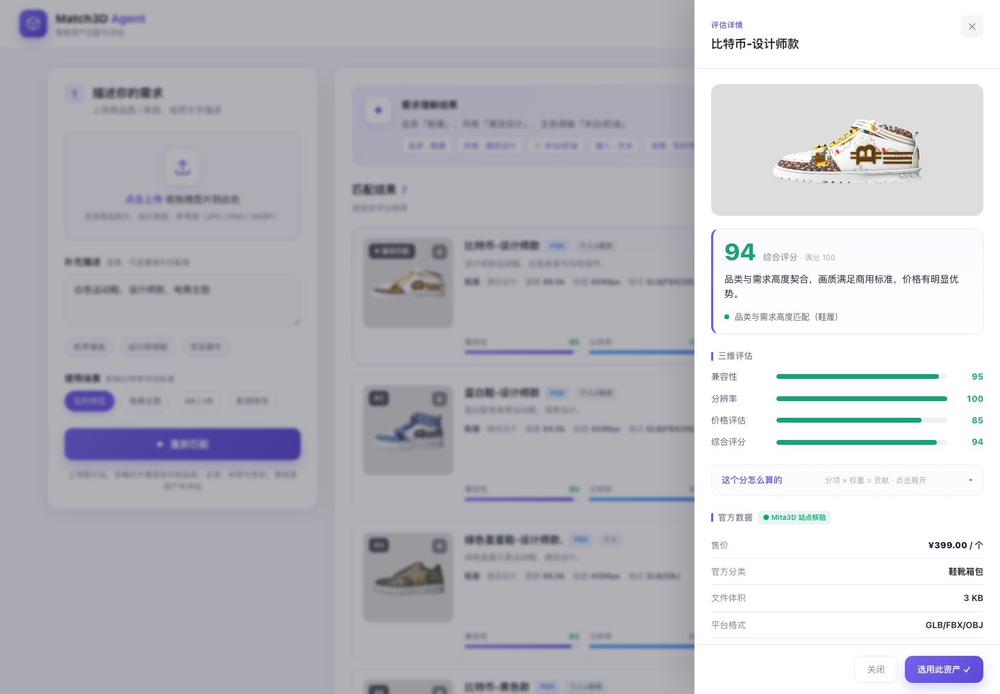

把"找与比"，收敛成一句话结论
买家往往只有一张参考图或一个模糊想法，却要在大量模型里逐个比对风格、面数、授权和价格。目标是让系统替用户完成筛选与判断。
采购中反复出现的三个问题
① 风格对不对：参考图和候选资产的风格是否匹配。
② 能不能用：授权能否商用、画质/面数够不够目标场景。
③ 值不值这个价：同类资产价差大，缺可比基准。
买家手上往往只有一张图或一句模糊想法，只能逐个模型比对，三个问题每次采购都要重新回答一遍。
我的产品思路
多模态理解需求 → 相关性过滤 → 可解释评分 → 渐进披露 → 并排对比给结论。全程把结论摆在最前，把证据放在用户需要时展开；并让架构可规模化——资产走知识库，不写死在代码里。
核心标准只有一个：每一句话，是不是帮用户更快做了决定，而不是"功能是不是更炫"。
所以这不是一个检索工具，是一个决策辅助工具。搜索给的是一列结果，决策给的是"该选哪个、为什么"——后者才是采购场景里真正稀缺的东西。
七个关键判断，决定了产品能不能用
从"一个想法"到"一个能拍板的决策工具"，经历 7 轮优化。每轮我先判断问题值不值得解决、该解决到什么程度，再定方案、推动落地。技术不难，难在判断。
演示资产是编的，没有说服力
架构决策搜索犀牛，却混进发动机、狗屋、鸟
产品设计归因表全铺开，用户根本不看
产品设计对比表十几行全打星，等于没说
产品设计图片卡片破裂 + 评估要点显示成单字
工程优化上传草图太费 token，成本划不来
工程优化落地成扣子工作流：不能因为只有 26 个资产就内嵌
架构决策从需求到结论，一条链跑通




同一套设计，用两种形态验证
前端原型和扣子工作流不是"重复做了两遍"，也不是"没接起来的半成品"——它们是同一套逻辑的两端：一端验证产品体验，一端验证可规模化落地。演示时讲成一体两面，比硬拼成一个系统更诚实、也更稳。
验证产品体验
可上手点、可上传草图，验证的是"用户看得懂、愿意用"。
- 渐进披露：结论在前，归因按需展开
- 并排对比：决策摘要直给推荐
- 多模态识别 + 草图压缩 −79%
- 26 张真实图内联，离线也能完整演示
验证可规模化落地
资产进知识库、代码零内嵌，验证的是"能接真实大库、能上线"。
- 标准 RAG：检索 → 确定性打分 → 组装
- 增减资产只改知识库，不动代码
- 12 节点全链路跑通
- 可发布成 Bot / API 对外服务
按"决策价值"收费，不按"工具功能"收费
搜索工具只能收流量费，一个帮企业缩短决策时间、避免错误采购的助手，是按价值定价的——一次选错模型的返工成本，往往就超过一套工具年费。这是溢价空间所在。
嵌入式选品助手
给 3D 资产平台做嵌入式助手，买家上传参考图即得推荐结论，直接提升"搜索→购买"转化。
通用决策 API
把"理解需求→召回→确定性打分→可解释结论"封装成 API。这套骨架不只适用 3D 模型，家具、面料、工业零件等非标品采购都是同一问题。
评分规则与标签资产
沉淀"什么资产在什么场景该给什么分"的验证过的评分规则与结构化标签，形成可迁移、抄不走的行业 know-how。
对数据来源保持诚实
演示估算：多边形面数、贴图分辨率、PBR、LOD、市场均价基准与评分，因平台未公开，均为演示估算，界面中以"估算"徽标区分。
离线自足：资产数据与图片已做离线快照，接口变更或下线也能完整演示。